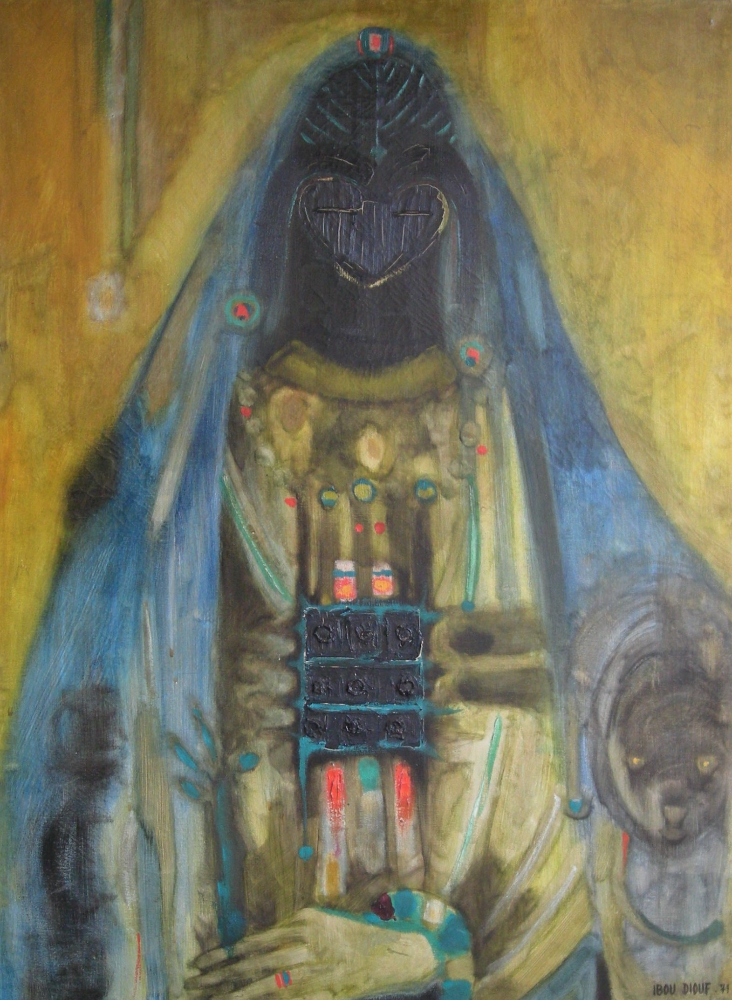

Ibou Diouf
1941–2017
Artist Biography
Ibrahima ‘Ibou’ Diouf gained a place at the National Beaux Arts Institute of Senegal in Dakar in 1960, the year it opened and that Senegal gained its independence. The school was split into two parts, one teaching art in a Western style and the other, which Diouf attended, the ‘Section de Recherches Plastiques Negres’ under Papa Ibra Tall and Pierre Lods. This aimed at creating a new and vibrant Senegalese and African modern art based on ‘Negritude’ and was heavily promoted by the President of Senegal, Leopold Senghor. Diouf was to become one of the artists most associated with Negritude – a pride in African culture merged with modernity - and he designed the poster advertising the ‘Premier Festival Mondial des Arts Negres’ in Dakar in 1966. Whilst Western critics dubbed Diouf and fellow graduates from the Beaux Arts Institute in Dakar the ‘Ecole de Dakar’ the artists never considered themselves to belong to a school. What they shared though was state backing which allowed them to pursue artistic careers – in Diouf’s case through payments for designing tapestries for Manufactures Nationales des Tapissiares. Diouf’s work was included in a major exhibition at the Grand Palais, Paris in 1974 ‘Art Senegalese de Aujourd’hui’ which later toured through Europe and North and South America. Although Diouf’s work fell out of fashion as younger artists came through, he remained one of the best known of Senegal’s pioneer artists and in1999 was awarded the Chevalier de l’Ordre National du Lion, the highest honorary award in Senegal.

Portrait de Mere, 1971